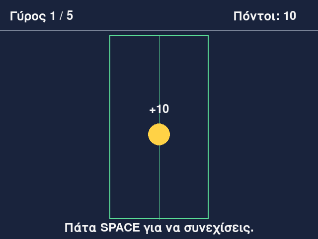
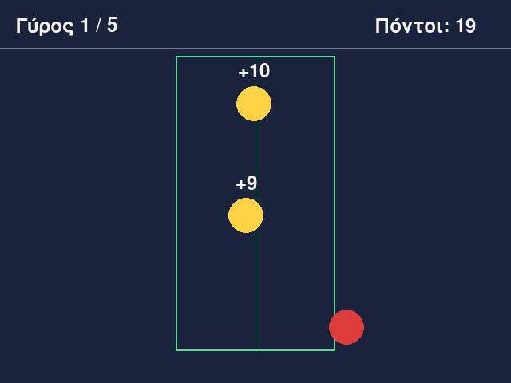
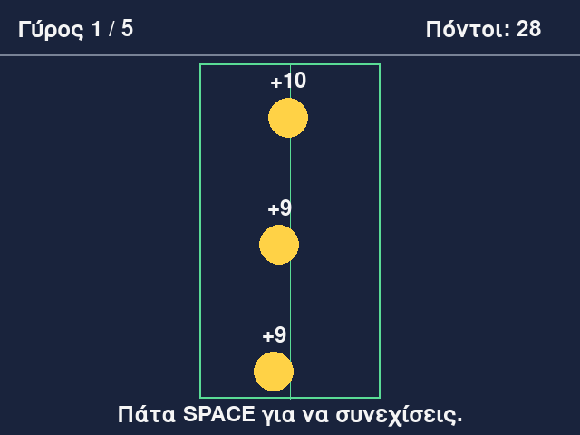
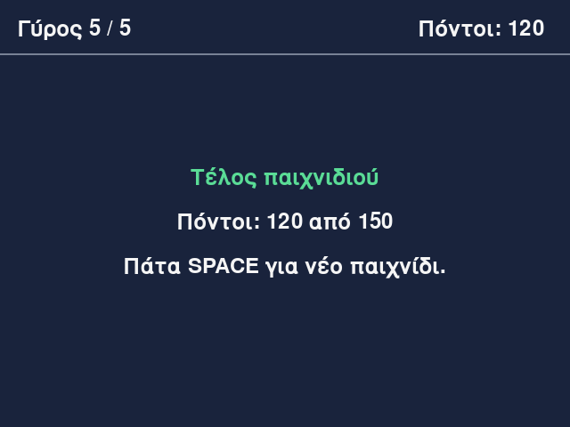

Μάθημα 8: Πάγωσε την μπάλα¶
Παιχνίδι: πάτα SPACE την κατάλληλη στιγμή και πάγωσε τις μπάλες μέσα στην πράσινη ζώνη
Διάρκεια: 4 κύκλοι × (περίπου 45′ εργασία + 15′ διάλειμμα)
Φύλλο εργασίας
Αυτή η σελίδα εξηγεί τις έννοιες. Οι ασκήσεις και οι οδηγίες για κάθε κύκλο βρίσκονται στο Φύλλο εργασίας 8. Δούλεψε με τις δύο σελίδες ανοιχτές.
Αρχεία εργαστηρίου¶
| Αρχείο | Κύκλος |
|---|---|
| 01-moving.py | 1 |
| 02-bounce.py | 2 |
| 03-freeze.py | 3 |
| 04-final.py | 4 |
| exercises.py | 1–4 (οι ασκήσεις «γράψε εσύ») |
| check_exercises.py | 1–4 (αυτοέλεγχος των ασκήσεων) |
Κατέβασε και τα έξι αρχεία στον ίδιο φάκελο.
Η αποστολή¶
Στο Μάθημα 7 το παιχνίδι άλλαζε μόνο όταν έκανες κλικ. Σήμερα τα αντικείμενα κινούνται μόνα τους, και εσύ πρέπει να πατήσεις ένα πλήκτρο την κατάλληλη στιγμή.
Στο παράθυρο κινούνται τρεις μπάλες, καθεμία στη δική της λωρίδα, και αναπηδούν στις δύο πλευρές. Στη μέση υπάρχει μια πράσινη ζώνη με μια γραμμή στο κέντρο της. Κάθε φορά που πατάς SPACE, παγώνει η πρώτην μπάλα (από πάνω προς τα κάτω) που ακόμη κινείται. Κερδίζεις 10 πόντους αν παγώσει στο κέντρο της ζώνης και έναν λιγότερο για κάθε 10 pixel απόσταση από το κέντρο. Έξω από τη ζώνη δεν κερδίζεις τίποτα. Όταν παγώσουν και οι τρεις, τελειώνει ο γύρος. Το παιχνίδι έχει πέντε γύρους και σε κάθε γύρο οι μπάλες γίνονται ταχύτερες.
Για να γίνει αυτό, χρειάζονται τέσσερα πράγματα που δεν έχεις δει:
- Κίνηση: η θέση ενός αντικειμένου αλλάζει σε κάθε καρέ.
- Χρόνος: η κίνηση πρέπει να φαίνεται ίδια σε γρήγορο και σε αργό υπολογιστή, και η μπάλα πρέπει να αναπηδά στα άκρα του παραθύρου.
- Πληκτρολόγιο και καταστάσεις: το ίδιο πλήκτρο κάνει άλλο πράγμα ανάλογα με το σημείο του παιχνιδιού.
- Πολλά αντικείμενα: τρεις μπάλες που ενημερώνονται με τον ίδιο κώδικα, μέσα σε μια λίστα.
Όλα τα υπόλοιπα τα ξέρεις από τα Μαθήματα 1–7. Σήμερα γράφεις και δικό σου κώδικα: σε κάθε κύκλο υπάρχει μία άσκηση «γράψε εσύ» με αυτοέλεγχο, και οι συναρτήσεις που φτιάχνεις μπορούν να μπουν μέσα στο ίδιο το παιχνίδι.
Στο τέλος θα μπορείς¶
- να κινείς ένα αντικείμενο αλλάζοντας τη θέση του σε κάθε καρέ, με ταχύτητα σε pixel ανά καρέ.
- να εξηγείς γιατί η αρχική θέση και η ταχύτητα ορίζονται πριν από τον βρόχο, ενώ η μετακίνηση και η σχεδίαση γίνονται μέσα σε αυτόν.
- να υπολογίζεις τον χρόνο ανά καρέ (
dt) με τη μέθοδοclock.tickκαι να κινείς αντικείμενα με ταχύτητα σε pixel ανά δευτερόλεπτο. - να εμφανίζεις τον ρυθμό καρέ (FPS) με τη μέθοδο
clock.get_fps. - να κρατάς ένα αντικείμενο μέσα σε όρια και να το κάνεις να αναπηδά, αντιστρέφοντας την ταχύτητά του.
- να διαβάζεις το πληκτρολόγιο με τα συμβάντα
KEYDOWN, τις ιδιότητεςevent.keyκαι τις σταθερέςK_SPACEκαιK_ESCAPE. - να οργανώνεις ένα παιχνίδι σε καταστάσεις (
PLAYING,ROUND_OVER,GAME_OVER) με σταθερές και αλυσίδαif/elif/else. - να κρατάς πολλά αντικείμενα του παιχνιδιού σε λίστα από λεξικά, και να τα ενημερώνεις και να τα ζωγραφίζεις με
for.
Πριν αρχίσεις¶
- Μέσα στον φάκελο
python-gamesφτιάξε τον φάκελο08-freeze-ball. - Κατέβασε εκεί τα έξι αρχεία του πίνακα, με τα ακριβή τους ονόματα.
- Άνοιξε τον φάκελο στο VS Code και άνοιξε τερματικό.
- Έλεγξε ότι η pygame-ce είναι εγκατεστημένη, όπως στο Μάθημα 7:
python -c "import pygame; print(pygame.version.ver)". - Φτιάξε ένα κενό αρχείο
sandbox.pyγια δοκιμές.
Ο κύκλος εργασίας
Πρόβλεψη → εκτέλεση → σύγκριση → εξήγηση. Στην κίνηση, η πρόβλεψη είναι ένας πίνακας: «πού θα βρίσκεται η μπάλα στο καρέ 1, στο 2, στο 3;». Συμπλήρωσέ τον στο χαρτί πριν τρέξεις τον κώδικα.
Κύκλος 1 — Η κίνηση ανά καρέ¶
Σε αυτόν τον κύκλο μια μπάλα διασχίζει το παράθυρο. Θα δεις ότι η κίνηση είναι απλώς αλλαγή της θέσης σε κάθε καρέ.
1.1 Η κίνηση είναι αλλαγή θέσης¶
Στην οθόνη δεν κινείται τίποτα στην πραγματικότητα. Το παράθυρο ξαναζωγραφίζεται περίπου 60 φορές το δευτερόλεπτο και σε κάθε καρέ η μπάλα ζωγραφίζεται λίγο πιο δεξιά από πριν. Το μάτι βλέπει κίνηση, όπως όταν γυρνάς γρήγορα τις σελίδες ενός τετραδίου με σχέδια. Άρα για να κινήσεις κάτι, αλλάζεις τη θέση του πριν το ζωγραφίσεις.
Για κίνηση σε έναν άξονα χρειάζεσαι δύο μεταβλητές, μία για τη θέση και μία για την ταχύτητα:
ball_x = 100 # η θέση: πού βρίσκεται η μπάλα
speed = 5 # η ταχύτητα: πόσα pixel αλλάζει η θέση σε κάθε καρέ
και μία γραμμή που μετακινεί την μπάλα σε κάθε καρέ:
Ιχνηλάτηση των πρώτων καρέ:
| Καρέ | 0 | 1 | 2 | 3 | 4 | 5 |
|---|---|---|---|---|---|---|
ball_x |
100 | 105 | 110 | 115 | 120 | 125 |
Η ταχύτητα είναι λοιπόν η αλλαγή της θέσης ανά καρέ: εδώ 5 pixel ανά καρέ. Έχει και φορά, που δίνεται από το πρόσημο:
| Ταχύτητα | Τι κάνει η μπάλα |
|---|---|
5 |
κινείται προς τα δεξιά (το x μεγαλώνει) |
-5 |
κινείται προς τα αριστερά (το x μικραίνει) |
0 |
μένει ακίνητη |
Για κίνηση προς τα πάνω ή προς τα κάτω αλλάζεις το y. Θυμήσου ότι το y μεγαλώνει προς τα κάτω (Μάθημα 7,
ενότητα 1.3), άρα για να ανέβει η μπάλα μειώνεις το y. Για διαγώνια κίνηση χρειάζεσαι μία ταχύτητα για κάθε άξονα:
Στο παιχνίδι μας οι μπάλες κινούνται μόνο οριζόντια.
1.2 Δύο βήματα: πριν από τον βρόχο και μέσα στον βρόχο¶
Κάθε κινούμενο αντικείμενο φτιάχνεται με την ίδια τεχνική των δύο βημάτων:
| Βήμα | Πού μπαίνει | Τι κάνει | Πόσες φορές εκτελείται |
|---|---|---|---|
| 1. Αρχικοποίηση | πριν από τον βρόχο | δίνει την αρχική θέση και την ταχύτητα | μία |
| 2. Ενημέρωση και σχεδίαση | μέσα στον βρόχο | αλλάζει τη θέση και ζωγραφίζει | σε κάθε καρέ |
ball_x = 100 # βήμα 1: μία φορά
speed = 5
while running:
ball_x += speed # βήμα 2: σε κάθε καρέ
pygame.draw.circle(screen, RED, (ball_x, 240), 22)
Το συνηθέστερο λάθος είναι να βάλεις την αρχική τιμή μέσα στον βρόχο:
while running:
ball_x = 100 # ΛΑΘΟΣ: σε κάθε καρέ η θέση ξαναγίνεται 100
ball_x += speed
pygame.draw.circle(screen, RED, (ball_x, 240), 22)
Σε κάθε καρέ η θέση γίνεται πρώτα 100, μετά 105, και ζωγραφίζεται στο 105. Στο επόμενο καρέ ξαναγίνεται 100. Η μπάλα φαίνεται ακίνητη στο 105, και η Python δεν δίνει κανένα μήνυμα, γιατί ο κώδικας είναι σωστός· απλώς κάνει άλλο πράγμα από αυτό που ήθελες.
1.3 Η μπάλα στην οθόνη¶
Η μπάλα είναι κύκλος. Τον ζωγραφίζεις με την pygame.draw.circle που ξέρεις από το Μάθημα 7, αλλά τώρα το κέντρο δεν
είναι σταθερό: φτιάχνεται σε κάθε καρέ από τις μεταβλητές της θέσης.
Η (ball_x, ball_y) είναι μια πλειάδα που φτιάχνεται εκείνη τη στιγμή με τις τρέχουσες τιμές. Η RADIUS είναι η ακτίνα
σε pixel. Αν η θέση έχει δεκαδικό μέρος (θα έχει από τον επόμενο κύκλο), η pygame-ce τη μετατρέπει μόνη της σε pixel κατά
τη σχεδίαση.
1.4 Η σειρά μέσα στο καρέ¶
Το καρέ ακολουθεί πάντα τα ίδια βήματα με την ίδια σειρά (Μάθημα 7, ενότητα 3.6): συμβάντα, ενημέρωση, σχεδίαση. Η κίνηση ανήκει στην ενημέρωση:
while running:
for event in pygame.event.get(): # 1. συμβάντα
if event.type == pygame.QUIT:
running = False
ball_x += speed # 2. ενημέρωση
screen.fill(BACKGROUND) # 3. σχεδίαση
pygame.draw.circle(screen, RED, (ball_x, ball_y), RADIUS)
pygame.display.flip()
clock.tick(60) # το «φρένο» των 60 καρέ το δευτερόλεπτο
Τώρα φαίνεται καθαρά γιατί η screen.fill είναι απαραίτητη: χωρίς αυτήν, σε κάθε καρέ η μπάλα ζωγραφίζεται πάνω στην
προηγούμενη θέση της και αφήνει πίσω της μια κόκκινη λωρίδα. Το ίδιο και η clock.tick(60): χωρίς αυτήν ο βρόχος τρέχει
όσο πιο γρήγορα μπορεί, χιλιάδες καρέ το δευτερόλεπτο, και η μπάλα διασχίζει το παράθυρο σε κλάσμα του δευτερολέπτου.
1.5 Όταν η μπάλα βγαίνει από το παράθυρο¶
Η μπάλα δεν σταματά στην άκρη του παραθύρου: συνεχίζει με x μεγαλύτερο από 640 και δεν φαίνεται πια. Για να μη χάνεται, ελέγχουμε τη θέση σε κάθε καρέ. Στο Στάδιο 1 η μπάλα ξαναμπαίνει από την αριστερή πλευρά:
Γιατί WIDTH + RADIUS και όχι WIDTH; Το ball_x είναι το κέντρο της μπάλας. Όταν το κέντρο φτάσει στο 640, μισή μπάλα
φαίνεται ακόμη. Η μπάλα έχει βγει ολόκληρη όταν το αριστερό της άκρο (ball_x - RADIUS) φτάσει το 640, δηλαδή όταν
ball_x γίνει 640 + 22 = 662. Με τον ίδιο τρόπο ξαναμπαίνει από το -RADIUS: τότε το δεξί της άκρο (ball_x + RADIUS)
είναι στο 0, και η μπάλα βρίσκεται ακριβώς έξω από το παράθυρο.
Για speed = 5 και αρχική θέση 22, τα καρέ γύρω από την επιστροφή είναι:
| Καρέ | ball_x μετά τον έλεγχο |
Τι φαίνεται |
|---|---|---|
| 127 | 657 | ένα στενό κομμάτι της μπάλας στη δεξιά άκρη |
| 128 | 662 | τίποτα: η μπάλα είναι ακριβώς έξω |
| 129 | -22 | τίποτα: το 667 ξεπέρασε το όριο και η μπάλα επανήλθε στο -22 |
| 130 | -17 | ένα στενό κομμάτι της μπάλας στην αριστερή άκρη |
1.6 Συνηθισμένα λάθη¶
| Τι βλέπεις | Πιθανή αιτία |
|---|---|
| Η μπάλα φαίνεται ακίνητη, λίγο μετά την αρχική θέση | η αρχική θέση ορίζεται μέσα στον βρόχο (ενότητα 1.2) |
| Η μπάλα δεν κινείται καθόλου | ball_x + speed αντί για ball_x += speed: ο υπολογισμός γίνεται αλλά δεν αποθηκεύεται |
| Η μπάλα αφήνει πίσω της μια κόκκινη λωρίδα | λείπει η screen.fill |
| Η μπάλα τρέχει απίστευτα γρήγορα | λείπει η clock.tick(60) |
| Η μπάλα χάνεται και δεν ξαναγυρνά | λείπει ο έλεγχος του ορίου, ή ελέγχεται η λάθος πλευρά για την κατεύθυνση που κινείται |
NameError: name 'ball_x' is not defined |
η μεταβλητή χρησιμοποιείται πριν οριστεί |
Στάδιο 1 — Μια μπάλα που κινείται¶
Άνοιξε το 01-moving.py. Συμπλήρωσε τα τέσσερα κενά και τρέξε το. Η κόκκινη μπάλα πρέπει να διασχίζει το παράθυρο από
αριστερά προς τα δεξιά και να ξαναμπαίνει από αριστερά.
"""Στάδιο 1 — Κίνηση: θέση και ταχύτητα ανά καρέ.
Συμπλήρωσε τα τέσσερα κενά (____). Η μπάλα μετακινείται προς τα δεξιά και, όταν βγει ολόκληρη από το
παράθυρο, ξαναμπαίνει από τα αριστερά.
"""
import pygame
pygame.init()
WIDTH = 640
HEIGHT = 480
RADIUS = 22
BACKGROUND = (25, 35, 60)
RED = (220, 60, 60)
screen = pygame.display.set_mode((WIDTH, HEIGHT))
pygame.display.set_caption("Πάγωσε την μπάλα")
clock = pygame.time.Clock()
# Βήμα 1, έξω από τον βρόχο: η αρχική θέση και η ταχύτητα της μπάλας
ball_x = RADIUS
ball_y = HEIGHT // 2
speed = 5 # pixel ανά καρέ
running = True
while running:
for event in pygame.event.get():
if event.type == pygame.QUIT:
running = False
# Βήμα 2, μέσα στον βρόχο: πρώτα η μετακίνηση, μετά η σχεδίαση
# TODO 1: σε κάθε καρέ, η θέση αυξάνεται κατά την ταχύτητα
ball_x ____ speed
# TODO 2: όταν το κέντρο της μπάλας περάσει τη δεξιά άκρη κατά μία ακτίνα, η μπάλα έχει βγει ολόκληρη
if ball_x ____ WIDTH + RADIUS:
# TODO 3: ξαναμπαίνει από αριστερά, ακριβώς έξω από το παράθυρο
ball_x = ____
screen.fill(BACKGROUND)
# TODO 4: ζωγράφισε τον κύκλο με κέντρο το σημείο (ball_x, ball_y)
pygame.draw.circle(screen, RED, ____, RADIUS)
pygame.display.flip()
clock.tick(60)
pygame.quit()
Συνέχισε στο Φύλλο εργασίας, Κύκλος 1.
Κύκλος 2 — Χρόνος, όρια και αναπήδηση¶
Η μπάλα κινείται, αλλά η ταχύτητά της εξαρτάται από τον υπολογιστή. Σε αυτόν τον κύκλο το διορθώνεις και προσθέτεις αναπήδηση.
2.1 Το πρόβλημα των pixel ανά καρέ¶
Στο Στάδιο 1 η μπάλα κινείται 5 pixel σε κάθε καρέ. Για να διασχίσει τα 640 pixel χρειάζεται 128 καρέ. Στα 60 καρέ το δευτερόλεπτο αυτό κάνει 2,1 δευτερόλεπτα. Αν όμως ο υπολογιστής είναι αργός και τρέχει μόνο 30 καρέ το δευτερόλεπτο, χρειάζεται 4,3 δευτερόλεπτα: το παιχνίδι γίνεται δύο φορές πιο αργό. Ένα παιχνίδι χρονισμού, όπως το σημερινό, δεν μπορεί να εξαρτάται από τον υπολογιστή.
Η λύση είναι η ταχύτητα να μετριέται σε pixel ανά δευτερόλεπτο και όχι ανά καρέ, και σε κάθε καρέ να υπολογίζουμε πόσος χρόνος πέρασε.
2.2 Ταχύτητα σε pixel ανά δευτερόλεπτο¶
Αν η μπάλα έχει ταχύτητα speed = 300 pixel το δευτερόλεπτο και ένα καρέ διαρκεί dt δευτερόλεπτα, σε αυτό το καρέ
διανύει speed * dt pixel. Το dt είναι ο χρόνος ανά καρέ (από το delta time, «διαφορά χρόνου»):
| Καρέ ανά δευτερόλεπτο | dt (δευτερόλεπτα) |
speed * dt (pixel σε ένα καρέ) |
Pixel σε ένα δευτερόλεπτο |
|---|---|---|---|
| 60 | 0,0167 | 5 | 300 |
| 30 | 0,0333 | 10 | 300 |
| 120 | 0,0083 | 2,5 | 300 |
Σε αργό υπολογιστή το βήμα ανά καρέ είναι μεγαλύτερο και σε γρήγορο μικρότερο, αλλά σε ένα δευτερόλεπτο η μπάλα διανύει πάντα 300 pixel. Η κίνηση φαίνεται ίδια παντού.
Πρόσεξε τη μονάδα. Αν γράψεις speed = 5 και πολλαπλασιάσεις με το dt, η μπάλα κινείται 5 pixel το δευτερόλεπτο,
δηλαδή σχεδόν καθόλου. Οι ταχύτητες αυτού του κύκλου είναι της τάξης των εκατοντάδων.
Γιατί η θέση δεν μένει σε ένα Rect;
Το Rect κρατά ακέραιους αριθμούς: αν του δώσεις δεκαδικό, κόβει το δεκαδικό μέρος. Αν προσθέσεις 0,4 σε μια
ιδιότητα του, π.χ. box.x += 0.4, πέντε φορές στη σειρά, το box.x μένει 0. Με δεκαδικά βήματα, όπως το
speed * dt, μια μπάλα που κρατά τη θέση της σε Rect δεν θα κινούνταν ποτέ. Γι' αυτό η θέση της μπάλας είναι
απλές μεταβλητές (ball_x), που κρατούν δεκαδικούς αριθμούς. Τον στόχο του Μαθήματος 7 τον κρατούσαμε σε Rect,
γιατί εκεί η θέση άλλαζε μόνο σε ακέραιες τιμές.
2.3 Πόσος χρόνος πέρασε; Η μέθοδος clock.tick¶
Τη clock.tick(60) τη γνωρίζεις: καθυστερεί τον βρόχο, ώστε να μην ξεπεράσει τα 60 καρέ το δευτερόλεπτο. Επιπλέον
επιστρέφει πόσα χιλιοστά του δευτερολέπτου πέρασαν από την προηγούμενη κλήση της, δηλαδή τη διάρκεια του προηγούμενου
καρέ. Αν επιστρέψει 17, το καρέ κράτησε 17 χιλιοστά του δευτερολέπτου, δηλαδή 0,017 δευτερόλεπτα. Για να τα κάνεις
δευτερόλεπτα, διαιρείς με το 1000:
Στο Μάθημα 7 η tick ήταν στο τέλος του βρόχου. Εδώ τη βάζουμε στην αρχή, γιατί χρειαζόμαστε την τιμή της πριν
μετακινήσουμε την μπάλα. Έχει σημασία να καλείται μία φορά σε κάθε καρέ, όπου κι αν βρίσκεται.
2.4 Το όριο του dt¶
Μερικές φορές ένα καρέ καθυστερεί πολύ, π.χ. όταν ο υπολογιστής ασχολείται με κάτι άλλο για μισό δευτερόλεπτο. Τότε το
επόμενο dt θα είναι 0,5 και η μπάλα θα «πηδήξει» 150 pixel μονομιάς. Το ίδιο μπορεί να συμβεί στο πρώτο καρέ, γιατί η
πρώτη tick μετρά από τη στιγμή που δημιουργήθηκε το ρολόι. Γι' αυτό περιορίζουμε το dt σε ένα μέγιστο, με το πρότυπο
της min που ξέρεις από το Μάθημα 4:
dt που μετρήθηκε |
min(dt, MAX_DT) |
Βήμα της μπάλας (300 pixel το δευτερόλεπτο) |
|---|---|---|
| 0,016 | 0,016 | 4,8 |
| 0,05 | 0,05 | 15 |
| 0,2 | 0,05 | 15 |
| 0,5 | 0,05 | 15 |
Στις σπάνιες καθυστερήσεις το παιχνίδι «τραβάει» για λίγο πιο αργά, αντί να πηδά. Το 0,05 δευτερόλεπτα αντιστοιχεί σε 20 καρέ το δευτερόλεπτο.
2.5 Πόσα καρέ το δευτερόλεπτο; Η μέθοδος clock.get_fps¶
Για να δεις πόσα καρέ το δευτερόλεπτο πετυχαίνει ο υπολογιστής σου, η μέθοδος clock.get_fps() επιστρέφει τον μέσο ρυθμό
των τελευταίων καρέ (FPS, από το frames per second). Τον κάνεις κείμενο με render και f-string, όπως στο Μάθημα 7:
fps_image = font.render(f"FPS: {clock.get_fps():.0f}", True, WHITE)
screen.blit(fps_image, (20, 20))
Το :.0f γράφει τον αριθμό χωρίς δεκαδικά (το :.1f του Μαθήματος 4 γράφει ένα δεκαδικό). Στα πρώτα περίπου δέκα καρέ η
get_fps δείχνει 0, γιατί δεν έχουν μετρηθεί αρκετά καρέ ώστε να βγει μέσος όρος. Μετά δείχνει έναν αριθμό κοντά στο 60.
2.6 Όρια και αναπήδηση¶
Η μπάλα πρέπει να μένει μέσα στο παράθυρο και να αναπηδά όταν φτάνει στα άκρα. Το ball_x είναι το κέντρο της, άρα η
μπάλα χωράει μέσα στο παράθυρο όταν:
- το αριστερό της άκρο είναι τουλάχιστον στο 0:
ball_x - RADIUS >= 0, δηλαδήball_x >= RADIUS, - το δεξί της άκρο είναι το πολύ στο
WIDTH:ball_x + RADIUS <= WIDTH, δηλαδήball_x <= WIDTH - RADIUS.
Όταν η θέση βγει έξω από αυτά τα όρια, κάνουμε δύο πράγματα: την επαναφέρουμε στο όριο και αντιστρέφουμε την ταχύτητα:
if ball_x < RADIUS:
ball_x = RADIUS
speed = -speed
elif ball_x > WIDTH - RADIUS:
ball_x = WIDTH - RADIUS
speed = -speed
Η speed = -speed γυρίζει τη φορά: το 300 γίνεται -300 και το -300 γίνεται 300. Αυτή είναι η αναπήδηση. Το elif
δηλώνει ότι η μπάλα δεν μπορεί να βγει και από τις δύο πλευρές ταυτόχρονα.
Γιατί επαναφέρουμε και τη θέση; Επειδή το dt αλλάζει από καρέ σε καρέ. Δες μια μπάλα με speed = 300 που
αναπηδά στο δεξί όριο (618) χωρίς επαναφορά της θέσης. Το πρώτο καρέ καθυστέρησε (dt = 0,05) και η μπάλα πέρασε
το όριο, και τα επόμενα καρέ είναι σύντομα. Η μπάλα ξεκινά από το 610:
| Καρέ | dt |
Θέση μετά το += |
Πάνω από το 618; | Ταχύτητα μετά |
|---|---|---|---|---|
| 1 | 0,05 | 625,0 | ναι | -300 |
| 2 | 0,01 | 622,0 | ναι | 300 |
| 3 | 0,016 | 626,8 | ναι | -300 |
| 4 | 0,016 | 622,0 | ναι | 300 |
Η μπάλα έμεινε έξω από το όριο και αλλάζει φορά σε κάθε καρέ: «τρέμει» έξω από το παράθυρο αντί να γυρίσει πίσω. Αν στο καρέ 1 η θέση επανέρχεται στο 618, τα επόμενα καρέ δίνουν 615,0 και 610,2 και 605,4, και η μπάλα φεύγει κανονικά προς τα αριστερά.
2.7 Η bounce ως συνάρτηση¶
Την ίδια λογική τη χρειάζεται κάθε μπάλα του παιχνιδιού, άρα τη γράφουμε μία φορά ως συνάρτηση (Μάθημα 4). Η συνάρτηση παίρνει τη θέση, την ταχύτητα και τα δύο όρια, και επιστρέφει τη νέα θέση και τη νέα ταχύτητα ως πλειάδα (πολλαπλή επιστροφή, Μάθημα 4):
def bounce(position, speed, low, high):
if position < low:
return low, -speed
if position > high:
return high, -speed
return position, speed
ball_x, speed = bounce(ball_x, speed, RADIUS, WIDTH - RADIUS)
Δεν χρειάζεται elif ή else: το return τελειώνει τη συνάρτηση μόλις ισχύσει η πρώτη περίπτωση. Η bounce δεν
μετακινεί τίποτα· η μετακίνηση (ball_x += speed * dt) γίνεται πριν από την κλήση της. Τα όρια είναι παράμετροι, γιατί η
συνάρτηση δεν γνωρίζει τίποτα για το παράθυρο ή για την ακτίνα της μπάλας. Την bounce θα την γράψεις εσύ στην άσκηση
αυτού του κύκλου, και θα τη χρησιμοποιήσεις στα Στάδια 3 και 4.
2.8 Συνηθισμένα λάθη¶
| Τι βλέπεις | Πιθανή αιτία |
|---|---|
| Η μπάλα κινείται πολύ γρηγορότερα από ό,τι περίμενες | ξέχασες το / 1000: το dt έγινε 17 και το min το περιόρισε στο MAX_DT |
| Η μπάλα κινείται σχεδόν καθόλου | η ταχύτητα είναι σε pixel ανά καρέ (π.χ. 5) αλλά πολλαπλασιάζεται με dt |
| Η μπάλα μπαίνει μισή μέσα στον τοίχο πριν γυρίσει | ο έλεγχος είναι ball_x < 0 αντί για ball_x < RADIUS |
| Η μπάλα «κολλά» ή τρέμει στην άκρη | λείπει η επαναφορά της θέσης στο όριο (ενότητα 2.6) |
| Η μπάλα αναπηδά μόνο από τη μία πλευρά | ο έλεγχος υπάρχει μόνο για το ένα όριο |
| Η μπάλα «πηδά» μετά από μια καθυστέρηση | λείπει το min(dt, MAX_DT) |
| Το FPS γράφει συνεχώς 0 | η get_fps χρειάζεται περίπου δέκα καρέ για να βγάλει μέσο όρο· αν μένει 0, δεν καλείται η tick |
Στάδιο 2 — Αναπήδηση με χρόνο¶
Άνοιξε το 02-bounce.py. Συμπλήρωσε τα πέντε κενά και τρέξε το. Η μπάλα πρέπει να αναπηδά ανάμεσα στις δύο πλευρές του
παραθύρου, και πάνω αριστερά πρέπει να φαίνεται το FPS (μετά τα πρώτα καρέ, κοντά στο 60).
"""Στάδιο 2 — Όρια, αναπήδηση και χρόνος ανά καρέ (dt).
Συμπλήρωσε τα πέντε κενά (____). Η μπάλα κινείται με ταχύτητα 300 pixel το δευτερόλεπτο, αναπηδά στις δύο
πλευρές του παραθύρου και ο ρυθμός καρέ (FPS) φαίνεται πάνω αριστερά.
"""
import pygame
pygame.init()
WIDTH = 640
HEIGHT = 480
RADIUS = 22
MAX_DT = 0.05 # το πολύ 0,05 δευτερόλεπτα ανά καρέ
BACKGROUND = (25, 35, 60)
RED = (220, 60, 60)
WHITE = (245, 245, 245)
screen = pygame.display.set_mode((WIDTH, HEIGHT))
pygame.display.set_caption("Πάγωσε την μπάλα")
font = pygame.font.Font(None, 36)
clock = pygame.time.Clock()
ball_x = RADIUS
ball_y = HEIGHT // 2
speed = 300 # pixel ανά ΔΕΥΤΕΡΟΛΕΠΤΟ
running = True
while running:
# Πόσα δευτερόλεπτα πέρασαν από το προηγούμενο καρέ (η tick επιστρέφει χιλιοστά του δευτερολέπτου)
# TODO 1: τα χιλιοστά γίνονται δευτερόλεπτα με διαίρεση με το 1000
dt = clock.tick(60) / ____
# TODO 2: κράτα το dt το πολύ ίσο με MAX_DT, ώστε μια καθυστέρηση να μη «πετάξει» την μπάλα
dt = ____(dt, MAX_DT)
for event in pygame.event.get():
if event.type == pygame.QUIT:
running = False
# TODO 3: η μετακίνηση είναι ταχύτητα επί χρόνο
ball_x += speed * ____
# TODO 4: όταν η μπάλα περάσει την αριστερή πλευρά (η θέση είναι μικρότερη από την ακτίνα)
if ball_x ____ RADIUS:
ball_x = RADIUS
speed = -speed
elif ball_x > WIDTH - RADIUS:
ball_x = WIDTH - RADIUS
# TODO 5: αντέστρεψε την ταχύτητα, όπως στην αριστερή πλευρά
____
screen.fill(BACKGROUND)
pygame.draw.circle(screen, RED, (ball_x, ball_y), RADIUS)
fps_image = font.render(f"FPS: {clock.get_fps():.0f}", True, WHITE)
screen.blit(fps_image, (20, 20))
pygame.display.flip()
pygame.quit()
Συνέχισε στο Φύλλο εργασίας, Κύκλος 2.
Κύκλος 3 — Πλήκτρα, καταστάσεις και πόντοι¶
Η μπάλα αναπηδά, αλλά δεν υπάρχει παιχνίδι. Σε αυτόν τον κύκλο ο παίκτης αποκτά τον έλεγχο: πατά SPACE για να παγώσει την μπάλα, κερδίζει πόντους και προχωρά στον επόμενο γύρο.
3.1 Το πληκτρολόγιο: KEYDOWN¶
Στο Μάθημα 7 έμαθες ότι κάθε συμβάν έχει τύπο, και είδες τους QUIT και MOUSEBUTTONDOWN. Για το πληκτρολόγιο
υπάρχουν δύο ακόμη:
| Τύπος | Πότε εμφανίζεται | Ιδιότητα |
|---|---|---|
pygame.KEYDOWN |
πατήθηκε ένα πλήκτρο | key |
pygame.KEYUP |
αφέθηκε ένα πλήκτρο | key |
Η ιδιότητα event.key λέει ποιο πλήκτρο. Δεν είναι γράμμα αλλά ένας αριθμός (το SPACE είναι το 32), γι' αυτό τον
συγκρίνεις με σταθερές της pygame που ξεκινούν με K_:
| Σταθερά | Πλήκτρο |
|---|---|
pygame.K_SPACE |
διάστημα |
pygame.K_ESCAPE |
Esc |
pygame.K_RETURN |
Enter |
pygame.K_LEFT, pygame.K_RIGHT, pygame.K_UP, pygame.K_DOWN |
τα βέλη |
pygame.K_p |
το γράμμα P (το ίδιο ισχύει για όλα τα γράμματα: K_a, K_b, …) |
pygame.K_1 |
το ψηφίο 1 (K_0 έως K_9) |
Δεν χρειάζεται να τα μάθεις απ' έξω: η πλήρης λίστα υπάρχει στην τεκμηρίωση της pygame-ce (ψάξε «key constants»). Αν
θέλεις να δεις τι ακριβώς φτάνει, πρόσθεσε print(event) στον for και πάτησε μερικά πλήκτρα:
Το 768 είναι ο τύπος KEYDOWN, και το 32 είναι η τιμή της pygame.K_SPACE.
Το KEYDOWN έρχεται μία φορά όταν πατάς το πλήκτρο, ακόμη κι αν το κρατήσεις πατημένο. Έτσι ένα πάτημα του SPACE
παγώνει μία μπάλα, όχι όλες. Το KEYUP έρχεται όταν αφήσεις το πλήκτρο. Το παιχνίδι μας το αγνοεί, αλλά θα το
ξαναδείς στο επόμενο μάθημα.
Ο έλεγχος γράφεται όπως ο έλεγχος του κλικ στο Μάθημα 7:
for event in pygame.event.get():
if event.type == pygame.QUIT:
running = False
elif event.type == pygame.KEYDOWN:
if event.key == pygame.K_ESCAPE:
running = False
elif event.key == pygame.K_SPACE:
print("SPACE")
Ελέγχεις πρώτα τον τύπο και μετά διαβάζεις την event.key, γιατί μόνο τα συμβάντα πληκτρολογίου την έχουν. Σε συμβάν
QUIT η ανάγνωση της event.key δίνει AttributeError: 'pygame.event.Event' object has no attribute 'key'.
3.2 Οι καταστάσεις του παιχνιδιού¶
Στο Μάθημα 7 είχαμε μία σημαία, την game_over. Εδώ το παιχνίδι έχει τρεις καταστάσεις, και μια μεταβλητή state που
λέει σε ποια βρίσκεται:
Οι τρεις τιμές είναι σταθερές (με κεφαλαία, όπως η WIDTH). Γιατί σταθερές και όχι οι συμβολοσειρές απευθείας; Αν
γράψεις λάθος μια σταθερά (ROUND_OVR), η Python δίνει αμέσως NameError. Αν γράψεις λάθος μια συμβολοσειρά
("round_ovr"), δεν δίνει κανένα μήνυμα: η σύγκριση απλώς δεν ισχύει ποτέ και το παιχνίδι δεν κάνει αυτό που θέλεις,
χωρίς να ξέρεις γιατί.
| Κατάσταση | Τι κινείται | Τι ζωγραφίζεται | Τι κάνει το SPACE |
|---|---|---|---|
PLAYING |
η μπάλα | κόκκινη μπάλα | παγώνει την μπάλα, δίνει πόντους και περνά στην ROUND_OVER |
ROUND_OVER |
τίποτα | κίτρινη μπάλα, οι πόντοι της και το «Πάτα SPACE για να συνεχίσεις.» | ξεκινά τον επόμενο γύρο (PLAYING), ή μετά τον τελευταίο γύρο περνά στην GAME_OVER |
GAME_OVER |
τίποτα | «Τέλος παιχνιδιού» και το σύνολο των πόντων | ξεκινά νέο παιχνίδι (PLAYING) |
Οι μεταβάσεις φαίνονται σε σχήμα:
SPACE (πάγωμα) SPACE (γύρος 1 έως 4)
PLAYING ─────────────────► ROUND_OVER ───────────────────────► PLAYING (νέος γύρος)
▲ │
│ SPACE (νέο παιχνίδι) │ SPACE (γύρος 5)
│ ▼
└─────────────────────── GAME_OVER
3.3 Το ίδιο πλήκτρο, άλλη δουλειά¶
Το SPACE σημαίνει άλλο πράγμα σε κάθε κατάσταση, όπως το κλικ στο Μάθημα 7 (ενότητα 4.5). Το χειριζόμαστε με αλυσίδα
if/elif/else πάνω στην state:
elif event.key == pygame.K_SPACE:
if state == PLAYING:
... # πάγωσε την μπάλα και υπολόγισε τους πόντους
state = ROUND_OVER
elif state == ROUND_OVER:
if round_number == ROUNDS:
state = GAME_OVER
else:
... # ξεκίνα τον επόμενο γύρο
state = PLAYING
else:
... # ξεκίνα νέο παιχνίδι
state = PLAYING
Το else στο τέλος καλύπτει την τρίτη κατάσταση (GAME_OVER). Σε κάθε πάτημα εκτελείται ένας μόνο κλάδος, άρα ένα
πάτημα του SPACE δεν μπορεί να κάνει δύο μεταβάσεις μαζί.
3.4 Πόντοι από την απόσταση¶
Το κέντρο της ζώνης είναι στο ZONE_X (320). Η απόσταση της μπάλας από το κέντρο είναι η απόλυτη τιμή της διαφοράς
(abs, Μάθημα 2):
Η abs δίνει δεκαδικό αριθμό (π.χ. 73,4), γιατί το ball_x είναι δεκαδικό. Η round (Μάθημα 4) τον στρογγυλοποιεί σε
ακέραιο: 73. Χωρίς την round οι πόντοι θα έβγαιναν δεκαδικοί και το παιχνίδι θα έγραφε «+3.0» αντί για «+3».
Οι πόντοι: 10 στο κέντρο, ένας λιγότερος για κάθε 10 pixel απόσταση, ποτέ λιγότεροι από 0:
Η // (ακέραια διαίρεση, Μάθημα 1) λέει πόσες ολόκληρες δεκάδες pixel απέχει η μπάλα:
| Απόσταση | distance // 10 |
Πόντοι |
|---|---|---|
| 0 έως 9 | 0 | 10 |
| 10 έως 19 | 1 | 9 |
| 20 έως 29 | 2 | 8 |
| … | … | … |
| 90 έως 99 | 9 | 1 |
| 100 και πάνω | 10 ή περισσότερο | 0 |
Η max(0, …) εμποδίζει τους αρνητικούς πόντους: χωρίς αυτήν, μια μπάλα σε απόσταση 250 θα έδινε 10 − 25 = −15 (το
πρότυπο max για κάτω όριο το ξέρεις από το Μάθημα 4). Η ζώνη έχει πλάτος 200 pixel, 100 από κάθε πλευρά του κέντρου: εκεί
που τελειώνει η ζώνη, οι πόντοι μηδενίζονται. Τον υπολογισμό των πόντων τον γράφουμε ως συνάρτηση points_for(distance),
που θα γράψεις εσύ στην άσκηση του κύκλου.
3.5 Γύροι και δυσκολία¶
Σε κάθε γύρο η μπάλα ξεκινά από τυχαία θέση, με τυχαία φορά, και η ταχύτητά της μεγαλώνει με τον αριθμό του γύρου:
def start_round(round_number):
x = random.randint(RADIUS, WIDTH - RADIUS)
speed = (BASE_SPEED + SPEED_STEP * (round_number - 1)) * random.choice([-1, 1])
return x, speed
- Η
random.randint(RADIUS, WIDTH - RADIUS)δίνει θέση όπου χωράει ολόκληρη η μπάλα (όπως στο Μάθημα 7 για τον στόχο). - Η
random.choice([-1, 1])διαλέγει τυχαία φορά (Μάθημα 2): το -1 ή το 1 πολλαπλασιάζει την ταχύτητα. - Η ταχύτητα είναι
BASE_SPEED + SPEED_STEP * (round_number - 1). ΜεBASE_SPEED = 200καιSPEED_STEP = 40οι πέντε γύροι έχουν τις ταχύτητες του πίνακα.
| Γύρος | 1 | 2 | 3 | 4 | 5 |
|---|---|---|---|---|---|
| Ταχύτητα (pixel το δευτερόλεπτο) | 200 | 240 | 280 | 320 | 360 |
Η συνάρτηση επιστρέφει δύο τιμές (πολλαπλή επιστροφή), που αποσυσκευάζονται σε δύο μεταβλητές:
ball_x, speed = start_round(round_number).
3.6 Το πάγωμα είναι απουσία ενημέρωσης¶
Δεν υπάρχει εντολή «πάγωσε». Η μπάλα μετακινείται μόνο όταν το παιχνίδι είναι σε κατάσταση PLAYING:
if state == PLAYING:
ball_x += speed * dt
ball_x, speed = bounce(ball_x, speed, RADIUS, WIDTH - RADIUS)
Όταν η κατάσταση γίνει ROUND_OVER, η συνθήκη δεν ισχύει, η θέση δεν αλλάζει και η μπάλα μένει εκεί που ήταν. Η
σχεδίαση συνεχίζει να την ζωγραφίζει σε κάθε καρέ, στο ίδιο σημείο. Το πάγωμα, λοιπόν, δεν είναι κάτι που κάνεις στη
μπάλα· είναι κάτι που σταματάς να κάνεις.
3.7 Σχεδίαση ανά κατάσταση¶
Και η σχεδίαση εξαρτάται από την κατάσταση:
- Σε
GAME_OVERζωγραφίζονται μόνο τα μηνύματα, χωρίς μπάλα. - Αλλιώς ζωγραφίζεται η μπάλα: κόκκινη όσο κινείται και κίτρινη όταν είναι παγωμένη, με την έκφραση
ifσε μία γραμμή του Μαθήματος 2:color = RED if state == PLAYING else YELLOW. - Σε
ROUND_OVERπροστίθενται οι πόντοι της μπάλας (π.χ. «+8») και το μήνυμα «Πάτα SPACE για να συνεχίσεις.».
Το HUD (η γραμμή πάνω με τον γύρο και τους πόντους) και η πράσινη ζώνη ζωγραφίζονται σε όλες τις καταστάσεις. Η ζώνη
είναι ένα Rect (Μάθημα 7), που ζωγραφίζεται με pygame.draw.rect ως περίγραμμα και με μια γραμμή στο κέντρο της με
pygame.draw.line.
3.8 Δοκιμές¶
| Ενέργεια | Τι αναμένουμε |
|---|---|
| ξεκινάς το παιχνίδι | «Γύρος 1 / 5» και «Πόντοι: 0», και μια κόκκινη μπάλα που κινείται και αναπηδά |
| SPACE ενώ η μπάλα είναι κοντά στο κέντρο | η μπάλα γίνεται κίτρινη και δείχνει «+9» ή «+10» |
| SPACE ενώ η μπάλα είναι έξω από τη ζώνη | η μπάλα γίνεται κίτρινη και δείχνει «+0» |
| SPACE μετά το πάγωμα | νέος γύρος: «Γύρος 2 / 5», κόκκινη μπάλα, ταχύτερη, και οι πόντοι μένουν |
| SPACE μετά τον 5ο γύρο | «Τέλος παιχνιδιού» και «Πόντοι: … από 50» |
| SPACE στην οθόνη τέλους | νέο παιχνίδι, «Γύρος 1 / 5» και «Πόντοι: 0» |
| κρατάς πατημένο το SPACE | ένα μόνο πάτημα μετράει |
| Esc ή X | το παράθυρο κλείνει |
| κλικ ή άλλο πλήκτρο | δεν γίνεται τίποτα |
Στάδιο 3 — Το παιχνίδι με μία μπάλα¶
Άνοιξε το 03-freeze.py. Συμπλήρωσε τα οκτώ κενά και παίξε ένα ολόκληρο παιχνίδι. Έτσι φαίνεται μια μπάλα που πάγωσε
στο κέντρο της ζώνης:

"""Στάδιο 3 — Πληκτρολόγιο, καταστάσεις και πόντοι: μία μπάλα, πέντε γύροι.
Συμπλήρωσε τα οκτώ κενά (____). Η μπάλα αναπηδά στις δύο πλευρές. Το SPACE την παγώνει και δίνει πόντους ανάλογα με
την απόσταση από το κέντρο της πράσινης ζώνης. Το επόμενο SPACE ξεκινά τον επόμενο γύρο, με μεγαλύτερη ταχύτητα.
Το ESC κλείνει το παιχνίδι.
"""
import random
import pygame
pygame.init()
WIDTH = 640
HEIGHT = 480
HUD_HEIGHT = 60
RADIUS = 22
LANE_Y = 270
ZONE_X = WIDTH // 2
ZONE_WIDTH = 200
ROUNDS = 5
BASE_SPEED = 200 # pixel ανά δευτερόλεπτο, στον πρώτο γύρο
SPEED_STEP = 40 # αύξηση της ταχύτητας σε κάθε γύρο
MAX_POINTS = 10
MAX_DT = 0.05
PLAYING = "playing"
ROUND_OVER = "round_over"
GAME_OVER = "game_over"
BACKGROUND = (25, 35, 60)
RED = (220, 60, 60)
YELLOW = (255, 210, 70)
GREEN = (90, 220, 150)
WHITE = (245, 245, 245)
GREY = (120, 130, 150)
screen = pygame.display.set_mode((WIDTH, HEIGHT))
pygame.display.set_caption("Πάγωσε την μπάλα")
font = pygame.font.Font(None, 36)
clock = pygame.time.Clock()
zone = pygame.Rect(ZONE_X - ZONE_WIDTH // 2, HUD_HEIGHT + 10, ZONE_WIDTH, HEIGHT - HUD_HEIGHT - 50)
def draw_text(surface, font, text, color, position):
"""Ζωγραφίζει το κείμενο, με την πάνω αριστερή γωνία του στο position."""
image = font.render(text, True, color)
surface.blit(image, position)
def draw_centered_text(surface, font, text, color, center):
"""Ζωγραφίζει το κείμενο, με το κέντρο του στο center."""
image = font.render(text, True, color)
surface.blit(image, image.get_rect(center=center))
def start_round(round_number):
"""Επιστρέφει τη θέση και την ταχύτητα της μπάλας στην αρχή ενός γύρου."""
x = random.randint(RADIUS, WIDTH - RADIUS)
speed = (BASE_SPEED + SPEED_STEP * (round_number - 1)) * random.choice([-1, 1])
return x, speed
def bounce(position, speed, low, high):
"""Αν η θέση βγήκε από τα όρια, την επαναφέρει στο όριο και αντιστρέφει την ταχύτητα. Επιστρέφει (θέση, ταχύτητα)."""
if position < low:
return low, -speed
if position > high:
return high, -speed
return position, speed
def points_for(distance):
"""Οι πόντοι ενός πάγωματος: 10 στο κέντρο, ένας λιγότερος για κάθε 10 pixel απόσταση, ποτέ κάτω από 0."""
return max(0, MAX_POINTS - distance // 10)
round_number = 1
total = 0
points = 0
state = PLAYING
ball_x, speed = start_round(round_number)
running = True
while running:
dt = min(clock.tick(60) / 1000, MAX_DT)
for event in pygame.event.get():
if event.type == pygame.QUIT:
running = False
# TODO 1: το συμβάν «πατήθηκε πλήκτρο»
elif event.type == pygame.____:
# TODO 2: το πλήκτρο Escape
if event.key == pygame.____:
running = False
# TODO 3: το πλήκτρο του διαστήματος
elif event.key == pygame.____:
# TODO 4: το SPACE παγώνει την μπάλα μόνο όσο το παιχνίδι βρίσκεται σε αυτή την κατάσταση
if state == ____:
points = points_for(round(abs(ball_x - ZONE_X)))
total += points
# TODO 5: η μπάλα πάγωσε και ο γύρος τελείωσε
state = ____
# TODO 6: το SPACE μετά το τέλος του γύρου
elif state == ____:
if round_number == ROUNDS:
state = GAME_OVER
else:
round_number += 1
ball_x, speed = start_round(round_number)
state = PLAYING
else:
round_number = 1
total = 0
ball_x, speed = start_round(round_number)
state = PLAYING
if state == PLAYING:
ball_x += speed * dt
# TODO 7: η bounce παίρνει τη θέση, την ταχύτητα και τα δύο όρια, και επιστρέφει νέα θέση και νέα ταχύτητα
ball_x, speed = bounce(ball_x, ____, RADIUS, WIDTH - RADIUS)
screen.fill(BACKGROUND)
pygame.draw.line(screen, GREY, (0, HUD_HEIGHT), (WIDTH, HUD_HEIGHT), 2)
draw_text(screen, font, f"Γύρος {round_number} / {ROUNDS}", WHITE, (20, 20))
draw_text(screen, font, f"Πόντοι: {total}", WHITE, (WIDTH - 170, 20))
if state == GAME_OVER:
draw_centered_text(screen, font, "Τέλος παιχνιδιού", GREEN, (WIDTH // 2, 200))
draw_centered_text(screen, font, f"Πόντοι: {total} από {ROUNDS * MAX_POINTS}", WHITE, (WIDTH // 2, 250))
draw_centered_text(screen, font, "Πάτα SPACE για νέο παιχνίδι.", WHITE, (WIDTH // 2, 300))
else:
pygame.draw.rect(screen, GREEN, zone, 2)
pygame.draw.line(screen, GREEN, (ZONE_X, zone.top), (ZONE_X, zone.bottom), 1)
# TODO 8: κόκκινη όσο κινείται, κίτρινη όταν είναι παγωμένη
color = ____ if state == PLAYING else YELLOW
pygame.draw.circle(screen, color, (ball_x, LANE_Y), RADIUS)
if state == ROUND_OVER:
draw_centered_text(screen, font, f"+{points}", WHITE, (ball_x, LANE_Y - 50))
draw_centered_text(screen, font, "Πάτα SPACE για να συνεχίσεις.", WHITE, (WIDTH // 2, HEIGHT - 22))
pygame.display.flip()
pygame.quit()
Συνέχισε στο Φύλλο εργασίας, Κύκλος 3.
Κύκλος 4 — Πολλές μπάλες¶
Το παιχνίδι δουλεύει με μία μπάλα. Τώρα βάζουμε τρεις, καθεμία στη δική της λωρίδα, χωρίς να τριπλασιάσουμε τον κώδικα.
4.1 Πολλά αντικείμενα: λίστα από λεξικά¶
Για τρεις μπάλες θα μπορούσες να φτιάξεις ball1_x, ball2_x, ball3_x, speed1, speed2, speed3 και ούτω καθεξής.
Ο κώδικας όμως θα τριπλασιαζόταν, και για πέντε μπάλες θα πενταπλασιαζόταν. Στο Μάθημα 4 είδες τη λύση: ένα λεξικό
για κάθε μπάλα και μια λίστα με τα λεξικά.
| Κλειδί | Τι κρατά |
|---|---|
"x", "y" |
η θέση του κέντρου της μπάλας |
"speed" |
η ταχύτητα σε pixel το δευτερόλεπτο, με πρόσημο |
"frozen" |
True αν η μπάλα έχει παγώσει |
"points" |
οι πόντοι που κέρδισε όταν πάγωσε |
Οι τρεις μπάλες μπαίνουν σε μια λίστα, balls, και διαβάζονται με δείκτη και κλειδί:
| Έκφραση | Τι δίνει |
|---|---|
len(balls) |
το πλήθος των μπαλών (3) |
balls[1]["speed"] |
η ταχύτητα της δεύτερης μπάλας |
balls[0]["frozen"] = True |
παγώνει την πρώτην μπάλα |
Για να κάνεις κάτι σε όλες τις μπάλες, χρησιμοποιείς for:
Η μεταβλητή ball δείχνει την ίδια μπάλα που βρίσκεται στη λίστα, όχι αντίγραφο (Μάθημα 6, αναφορές): όταν αλλάζεις
το ball["x"], αλλάζει το λεξικό μέσα στη balls.
4.2 Φτιάχνοντας τις μπάλες¶
Οι τρεις λωρίδες και οι αρχικές ταχύτητες είναι δύο πλειάδες, με ένα στοιχείο για κάθε λωρίδα:
LANES = (130, 270, 410) # το y κάθε λωρίδας
BASE_SPEEDS = (180, 240, 300) # η ταχύτητα κάθε μπάλας στον γύρο 1 (pixel το δευτερόλεπτο)
SPEED_STEP = 30 # πόσο μεγαλώνει η ταχύτητα σε κάθε γύρο
Η συνάρτηση make_balls φτιάχνει τη λίστα για έναν γύρο:
def make_balls(round_number):
balls = []
for index in range(len(LANES)):
speed = BASE_SPEEDS[index] + SPEED_STEP * (round_number - 1)
balls.append({
"x": random.randint(RADIUS, WIDTH - RADIUS),
"y": LANES[index],
"speed": speed * random.choice([-1, 1]),
"frozen": False,
"points": 0,
})
return balls
Ο for περνά τους δείκτες 0, 1, 2 (range, Μάθημα 3). Για κάθε δείκτη φτιάχνεται ένα λεξικό με το δικό του y, τη δική του
ταχύτητα, τυχαία αρχική θέση και τυχαία φορά, και προστίθεται στη λίστα με την append. Για να προσθέσεις τέταρτη
λωρίδα, προσθέτεις ένα στοιχείο σε καθεμία από τις δύο πλειάδες· ο υπόλοιπος κώδικας δεν αλλάζει. Αυτό είναι το κέρδος
από το να κρατάς τα δεδομένα σε λίστα αντί για ξεχωριστές μεταβλητές.
4.3 Πάγωμα της πρώτης μπάλας που κινείται¶
for ball in balls:
if not ball["frozen"]:
ball["frozen"] = True
ball["points"] = points_for(round(abs(ball["x"] - ZONE_X)))
total += ball["points"]
break
Ο for περνά τις μπάλες με τη σειρά. Η πρώτη που δεν είναι παγωμένη (not ball["frozen"]) παγώνει, παίρνει πόντους
και προστίθενται στο σύνολο. Το break (Μάθημα 2) διακόπτει τον βρόχο ώστε να μην παγώσουν και οι υπόλοιπες. Χωρίς το
break, το πρώτο πάτημα του SPACE θα πάγωνε και τις τρεις μπάλες.
Ιχνηλάτηση τεσσάρων πατημάτων (Α, Β, Γ οι μπάλες από πάνω προς τα κάτω):
| Πάτημα | Παγώνει | frozen των Α, Β, Γ μετά |
moving |
state μετά |
|---|---|---|---|---|
| 1 | Α | True, False, False |
2 | PLAYING |
| 2 | Β | True, True, False |
1 | PLAYING |
| 3 | Γ | True, True, True |
0 | ROUND_OVER |
| 4 | τίποτα | νέος γύρος, νέες μπάλες: False, False, False |
3 | PLAYING |
4.4 Πότε τελειώνει ο γύρος;¶
Μετά από κάθε πάγωμα μετράμε πόσες μπάλες κινούνται ακόμη, με μετρητή (Μάθημα 3):
Όταν δεν κινείται καμία, ο γύρος τελειώνει. Η άσκηση first_moving του κύκλου θα σου δώσει πιο σύντομο τρόπο (ενότητα 4.7).
4.5 Ενημέρωση και σχεδίαση κάθε μπάλας¶
Η ενημέρωση περνά μία μία τις μπάλες που κινούνται:
if state == PLAYING:
for ball in balls:
if not ball["frozen"]:
ball["x"] += ball["speed"] * dt
ball["x"], ball["speed"] = bounce(ball["x"], ball["speed"], RADIUS, WIDTH - RADIUS)
Η bounce επιστρέφει πλειάδα δύο τιμών, και η αποσυσκευασία (Μάθημα 4) τις βάζει στα δύο κλειδιά του λεξικού.
Και η σχεδίαση περνά όλες τις μπάλες:
for ball in balls:
color = YELLOW if ball["frozen"] else RED
pygame.draw.circle(screen, color, (ball["x"], ball["y"]), RADIUS)
if ball["frozen"]:
draw_centered_text(screen, font, f"+{ball['points']}", WHITE, (ball["x"], ball["y"] - 40))
Πρόσεξε τα εισαγωγικά μέσα στην f-string: το κείμενο περιβάλλεται από διπλά εισαγωγικά, οπότε το κλειδί του λεξικού
γράφεται με απλά (ball['points']).
4.6 Το ολοκληρωμένο παιχνίδι¶
Το 04-final.py συνδυάζει όσα έμαθες:
| Μέρος του κώδικα | Τι κάνει | Πού το έμαθες |
|---|---|---|
draw_text, draw_centered_text |
γράφουν κείμενο | Μάθημα 7 |
make_balls |
φτιάχνει τις μπάλες ενός γύρου | ενότητα 4.2 |
bounce |
κρατά την μπάλα μέσα στα όρια | ενότητα 2.7, άσκηση του Κύκλου 2 |
points_for |
υπολογίζει τους πόντους | ενότητα 3.4, άσκηση του Κύκλου 3 |
dt = min(clock.tick(60) / 1000, MAX_DT) |
ο χρόνος του καρέ | ενότητες 2.3–2.4 |
η αλυσίδα if state == … στο SPACE |
οι τρεις καταστάσεις | ενότητες 3.2–3.3 |
Οι μέγιστοι πόντοι είναι ROUNDS * MAX_POINTS * len(LANES) = 5 × 10 × 3 = 150, και το παιχνίδι τους υπολογίζει μόνο του,
οπότε αν αλλάξεις τον αριθμό των λωρίδων, το «από 150» αλλάζει μαζί τους.
4.7 Οι δικές σου συναρτήσεις μέσα στο παιχνίδι¶
Οι bounce και points_for που γράφεις στις ασκήσεις κάνουν ακριβώς ό,τι οι αντίστοιχες του 04-final.py. Μπορείς να τις
βάλεις στη θέση τους: σβήνεις τους ορισμούς από το παιχνίδι και γράφεις στην αρχή
from exercises import bounce, first_moving, points_for, όπως έκανες με τα δικά σου modules στο Μάθημα 4. Αν το παιχνίδι
παίζει όπως πριν, οι συναρτήσεις σου δουλεύουν και στην πράξη, όχι μόνο στον αυτοέλεγχο.
Η first_moving(balls) επιστρέφει τον δείκτη της πρώτης μπάλας που κινείται, ή None αν δεν κινείται καμία. Με αυτήν
αντικαθίστανται και οι δύο βρόχοι των ενοτήτων 4.3 και 4.4:
ball = balls[first_moving(balls)]
ball["frozen"] = True
ball["points"] = points_for(round(abs(ball["x"] - ZONE_X)))
total += ball["points"]
if first_moving(balls) is None:
state = ROUND_OVER
Όσο το παιχνίδι είναι σε PLAYING, τουλάχιστον μία μπάλα κινείται, άρα η πρώτη κλήση της first_moving δεν δίνει None.
4.8 Δοκιμές¶
| Ενέργεια | Τι αναμένουμε |
|---|---|
| ξεκινάς το παιχνίδι | τρεις κόκκινες μπάλες, μία σε κάθε λωρίδα, με διαφορετικές ταχύτητες, «Γύρος 1 / 5» |
| πρώτο SPACE | παγώνει η πάνω μπάλα (κίτρινη, με τους πόντους της), οι άλλες συνεχίζουν |
| δεύτερο και τρίτο SPACE | παγώνουν η μεσαία και η κάτω· εμφανίζεται «Πάτα SPACE για να συνεχίσεις.» |
| τέταρτο SPACE | νέος γύρος, με τρεις νέες κόκκινες μπάλες, ταχύτερες |
| SPACE μετά τον 5ο γύρο | «Τέλος παιχνιδιού» και «Πόντοι: … από 150» |
| SPACE στην οθόνη τέλους | νέο παιχνίδι |
| Esc ή X | το παράθυρο κλείνει |
Στάδιο 4 — Το ολοκληρωμένο παιχνίδι¶
Άνοιξε το 04-final.py. Συμπλήρωσε τα οκτώ κενά και παίξε δύο ολόκληρα παιχνίδια. Έτσι πρέπει να φαίνονται το παιχνίδι,
το τέλος ενός γύρου και η οθόνη τέλους:



"""Στάδιο 4 — Το ολοκληρωμένο παιχνίδι: τρεις μπάλες σε τρεις λωρίδες, πέντε γύροι.
Συμπλήρωσε τα οκτώ κενά (____). Κάθε μπάλα είναι ένα λεξικό και οι τρεις μπάλες μπαίνουν σε μια λίστα. Σε κάθε
γύρο το SPACE παγώνει την πρώτη μπάλα που ακόμη κινείται. Ο γύρος τελειώνει όταν παγώσουν και οι τρεις.
"""
import random
import pygame
pygame.init()
WIDTH = 640
HEIGHT = 480
HUD_HEIGHT = 60
RADIUS = 22
LANES = (130, 270, 410)
BASE_SPEEDS = (180, 240, 300) # pixel ανά δευτερόλεπτο, στον πρώτο γύρο
SPEED_STEP = 30 # αύξηση της ταχύτητας σε κάθε γύρο
ZONE_X = WIDTH // 2
ZONE_WIDTH = 200
ROUNDS = 5
MAX_POINTS = 10
MAX_DT = 0.05
PLAYING = "playing"
ROUND_OVER = "round_over"
GAME_OVER = "game_over"
BACKGROUND = (25, 35, 60)
RED = (220, 60, 60)
YELLOW = (255, 210, 70)
GREEN = (90, 220, 150)
WHITE = (245, 245, 245)
GREY = (120, 130, 150)
screen = pygame.display.set_mode((WIDTH, HEIGHT))
pygame.display.set_caption("Πάγωσε την μπάλα")
font = pygame.font.Font(None, 36)
clock = pygame.time.Clock()
zone = pygame.Rect(ZONE_X - ZONE_WIDTH // 2, HUD_HEIGHT + 10, ZONE_WIDTH, HEIGHT - HUD_HEIGHT - 50)
def draw_text(surface, font, text, color, position):
"""Ζωγραφίζει το κείμενο, με την πάνω αριστερή γωνία του στο position."""
image = font.render(text, True, color)
surface.blit(image, position)
def draw_centered_text(surface, font, text, color, center):
"""Ζωγραφίζει το κείμενο, με το κέντρο του στο center."""
image = font.render(text, True, color)
surface.blit(image, image.get_rect(center=center))
def make_balls(round_number):
"""Φτιάχνει τις τρεις μπάλες ενός γύρου, μία σε κάθε λωρίδα. Η ταχύτητα μεγαλώνει σε κάθε γύρο."""
balls = []
for index in range(len(LANES)):
speed = BASE_SPEEDS[index] + SPEED_STEP * (round_number - 1)
# TODO 1: η μέθοδος της λίστας που προσθέτει στοιχείο στο τέλος
balls.____({
# TODO 2: τυχαία αρχική θέση x, ώστε η μπάλα να χωρά ολόκληρη μέσα στο παράθυρο
"x": random.____(RADIUS, WIDTH - RADIUS),
"y": LANES[index],
"speed": speed * random.choice([-1, 1]),
"frozen": False,
"points": 0,
})
return balls
def bounce(position, speed, low, high):
"""Αν η θέση βγήκε από τα όρια, την επαναφέρει στο όριο και αντιστρέφει την ταχύτητα. Επιστρέφει (θέση, ταχύτητα)."""
if position < low:
return low, -speed
if position > high:
return high, -speed
return position, speed
def points_for(distance):
"""Οι πόντοι ενός πάγωματος: 10 στο κέντρο, ένας λιγότερος για κάθε 10 pixel απόσταση, ποτέ κάτω από 0."""
return max(0, MAX_POINTS - distance // 10)
round_number = 1
total = 0
state = PLAYING
balls = make_balls(round_number)
running = True
while running:
dt = min(clock.tick(60) / 1000, MAX_DT)
for event in pygame.event.get():
if event.type == pygame.QUIT:
running = False
elif event.type == pygame.KEYDOWN:
if event.key == pygame.K_ESCAPE:
running = False
elif event.key == pygame.K_SPACE:
if state == PLAYING:
# Παγώνει την πρώτη μπάλα που ακόμη κινείται
for ball in balls:
if not ball["frozen"]:
# TODO 3: η μπάλα πάγωσε
ball["frozen"] = ____
# TODO 4: η απόσταση είναι από το κέντρο της ζώνης
ball["points"] = points_for(round(abs(ball["x"] - ____)))
total += ball["points"]
# TODO 5: μόνο η πρώτη μπάλα παγώνει, οπότε ο βρόχος διακόπτεται εδώ
____
# Μετρά πόσες μπάλες κινούνται ακόμη. Αν καμία, ο γύρος τελείωσε.
moving = 0
for ball in balls:
if not ball["frozen"]:
moving += 1
# TODO 6: καμία μπάλα δεν κινείται
if moving ____ 0:
state = ROUND_OVER
elif state == ROUND_OVER:
if round_number == ROUNDS:
state = GAME_OVER
else:
round_number += 1
balls = make_balls(round_number)
state = PLAYING
else:
round_number = 1
total = 0
balls = make_balls(round_number)
state = PLAYING
if state == PLAYING:
for ball in balls:
if not ball["frozen"]:
ball["x"] += ball["speed"] * dt
# TODO 7: ίδια ιδέα με το Στάδιο 3, αλλά με τα στοιχεία του λεξικού της μπάλας
____
screen.fill(BACKGROUND)
pygame.draw.line(screen, GREY, (0, HUD_HEIGHT), (WIDTH, HUD_HEIGHT), 2)
draw_text(screen, font, f"Γύρος {round_number} / {ROUNDS}", WHITE, (20, 20))
draw_text(screen, font, f"Πόντοι: {total}", WHITE, (WIDTH - 170, 20))
if state == GAME_OVER:
draw_centered_text(screen, font, "Τέλος παιχνιδιού", GREEN, (WIDTH // 2, 200))
draw_centered_text(screen, font, f"Πόντοι: {total} από {ROUNDS * MAX_POINTS * len(LANES)}", WHITE, (WIDTH // 2, 250))
draw_centered_text(screen, font, "Πάτα SPACE για νέο παιχνίδι.", WHITE, (WIDTH // 2, 300))
else:
pygame.draw.rect(screen, GREEN, zone, 2)
pygame.draw.line(screen, GREEN, (ZONE_X, zone.top), (ZONE_X, zone.bottom), 1)
for ball in balls:
# TODO 8: κίτρινη αν η μπάλα είναι παγωμένη, αλλιώς κόκκινη
color = YELLOW if ball[____] else RED
pygame.draw.circle(screen, color, (ball["x"], ball["y"]), RADIUS)
if ball["frozen"]:
draw_centered_text(screen, font, f"+{ball['points']}", WHITE, (ball["x"], ball["y"] - 40))
if state == ROUND_OVER:
draw_centered_text(screen, font, "Πάτα SPACE για να συνεχίσεις.", WHITE, (WIDTH // 2, HEIGHT - 22))
pygame.display.flip()
pygame.quit()
Συνέχισε στο Φύλλο εργασίας, Κύκλος 4.
Έλεγχος πριν ολοκληρώσεις¶
- □ Το παράθυρο ανοίγει με τίτλο «Πάγωσε την μπάλα» και κλείνει με το X και με το Esc.
- □ Οι τρεις μπάλες κινούνται με διαφορετικές ταχύτητες, αναπηδούν στις δύο πλευρές και δεν βγαίνουν ποτέ από το παράθυρο.
- □ Το FPS (στο Στάδιο 2) δείχνει περίπου 60 και η ταχύτητα της μπάλας δεν αλλάζει αν αλλάξεις το
clock.tick(60). - □ Το SPACE παγώνει ακριβώς μία μπάλα, την πρώτη που κινείται, και την κάνει κίτρινη με τους πόντους της.
- □ Οι πόντοι μειώνονται με την απόσταση από το κέντρο της ζώνης και δεν γίνονται ποτέ αρνητικοί.
- □ Όταν παγώσουν και οι τρεις, εμφανίζεται το μήνυμα και το επόμενο SPACE ξεκινά ταχύτερο γύρο.
- □ Μετά τον πέμπτο γύρο εμφανίζεται το «Τέλος παιχνιδιού» και το SPACE ξεκινά νέο παιχνίδι με 0 πόντους.
- □ Μπορείς να εξηγήσεις γιατί η αρχική θέση ορίζεται έξω από τον βρόχο και τι κάνει το
dt. - □ Οι τέσσερις ασκήσεις του
exercises.pyδείχνουνΟΛΑ ΟΚστοcheck_exercises.py.
Για να θυμάσαι¶
- Κίνηση = αλλαγή θέσης σε κάθε καρέ. Η αρχική θέση και η ταχύτητα ορίζονται πριν από τον βρόχο· η μετακίνηση και η σχεδίαση γίνονται μέσα στον βρόχο.
- Η ταχύτητα σε pixel ανά καρέ εξαρτάται από τον ρυθμό καρέ. Η ταχύτητα σε pixel ανά δευτερόλεπτο, με
ball_x += speed * dt, δεν εξαρτάται. - Το
dt = clock.tick(60) / 1000είναι ο χρόνος του προηγούμενου καρέ σε δευτερόλεπτα. Τοmin(dt, MAX_DT)εμποδίζει τα άλματα μετά από καθυστέρηση. - Η θέση της μπάλας είναι μεταβλητή και όχι
Rect, γιατί τοRectκόβει τα δεκαδικά. - Αναπήδηση: αν η θέση περάσει ένα όριο, την επαναφέρεις στο όριο και αντιστρέφεις την ταχύτητα.
- Το πληκτρολόγιο:
pygame.KEYDOWNκαιevent.key, που συγκρίνεται με σταθερές όπωςpygame.K_SPACE. Ελέγχεις πρώτα τον τύπο του συμβάντος. - Η κατάσταση του παιχνιδιού είναι μια μεταβλητή με τιμές-σταθερές. Το ίδιο πλήκτρο κάνει άλλο πράγμα σε κάθε κατάσταση, και τόσο η ενημέρωση όσο και η σχεδίαση εξαρτώνται από αυτήν.
- Πολλά αντικείμενα του ίδιου είδους: λίστα από λεξικά και
for ball in balls. Τοbreakσταματά τον βρόχο μόλις βρεθεί αυτό που ψάχνεις. - Οι
pygame.draw.circle,pygame.event.getείναι συναρτήσεις· ταclock.tick,clock.get_fps,screen.fill,font.renderείναι μέθοδοι αντικειμένων.
Λεξιλόγιο¶
θέση, ταχύτητα, pixel ανά καρέ, pixel ανά δευτερόλεπτο, χρόνος ανά καρέ (dt), ρυθμός καρέ
(FPS), όριο, αναπήδηση, KEYDOWN, KEYUP, σταθερά, κατάσταση του παιχνιδιού (state),
γύρος, λωρίδα, λεξικό, λίστα από λεξικά, αναφορά, AttributeError, NameError.
Δική σου εκδοχή¶
Αν τελειώσεις νωρίτερα, δοκίμασε μία από τις παρακάτω, με μία αλλαγή τη φορά:
- Εμφάνιση και δυσκολία: άλλαξε τα χρώματα, το
RADIUS, τοZONE_WIDTH, τοROUNDSή τοSPEED_STEP. Πρόσθεσε τέταρτη λωρίδα μεLANES = (110, 210, 310, 410)καιBASE_SPEEDS = (180, 220, 260, 300). Δες ότι δεν χρειάζεται να αλλάξεις τίποτα άλλο. - Οι δικές σου συναρτήσεις: φτιάξε το
05-my-functions.pyμε τιςbounce,points_forκαιfirst_movingτουexercises.py(Μέρος 2 της άσκησης Ε του Κύκλου 4). - Πρόκληση 1: παύση. Με το πλήκτρο P το παιχνίδι σταματά και ξαναρχίζει, και στην οθόνη γράφει «Παύση».
- Πρόκληση 2: χρυσή ζώνη. Μπόνους +5 πόντοι, αν ολόκληρη η μπάλα (όχι μόνο το κέντρο της) είναι μέσα σε μια στενή «χρυσή» ζώνη στη μέση.
Υπόδειξη για την Πρόκληση 1
Χρειάζεσαι μια σημαία paused (Μάθημα 1), που ξεκινά False. Το πλήκτρο P (pygame.K_p) την αντιστρέφει:
paused = not paused. Η μετακίνηση των μπαλών γίνεται μόνο όταν state == PLAYING and not paused. Όσο το παιχνίδι
είναι σε παύση, το SPACE να αγνοείται: elif event.key == pygame.K_SPACE and not paused:. Το P να λειτουργεί μόνο
στην κατάσταση PLAYING (elif event.key == pygame.K_p and state == PLAYING:), αλλιώς το παιχνίδι μπορεί να
μείνει σε παύση σε οθόνη όπου δεν φαίνεται κανένα μήνυμα. Ζωγράφισε το κείμενο «Παύση» με την draw_centered_text,
όταν paused είναι True.
Υπόδειξη για την Πρόκληση 2
Η μέθοδος a.contains(b) του Rect επιστρέφει True αν το ορθογώνιο b είναι ολόκληρο μέσα στο a. Φτιάξε μια
στενή χρυσή ζώνη, π.χ. gold = pygame.Rect(ZONE_X - 30, HUD_HEIGHT + 10, 60, HEIGHT - HUD_HEIGHT - 50), και ζωγράφισέ
τη με κίτρινο περίγραμμα πάχους 1. Για κάθε μπάλα φτιάξε ένα Rect που την περικλείει:
rect = pygame.Rect(0, 0, 2 * RADIUS, 2 * RADIUS) και μετά rect.center = (ball["x"], ball["y"]) (Μάθημα 7: αλλάζεις
μία ιδιότητα και οι άλλες ακολουθούν). Αν gold.contains(rect), πρόσθεσε 5 πόντους στην μπάλα. Μην ξεχάσεις ότι οι
μέγιστοι πόντοι του παιχνιδιού αλλάζουν: ROUNDS * (MAX_POINTS + BONUS) * len(LANES).